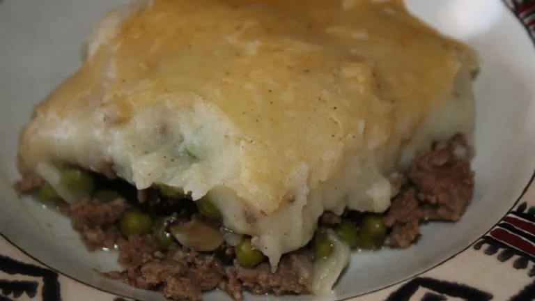

Shepherd's Pie

Dish Description
This version of Shepherd's Pie has been passed down from my mom to me, her mom to her, and so on, but it's one of those generic family recipes if you know what I mean.
Where my wife and I differ from my mother is in our spices and seasoning. My wife and I are kitchen witches, and so like to use 'utilitarian' spices, purposeful in their use to help your body into a healthy state. Instead of taco seasonings, we use a mix of earthy herbs that regulate your heart, reduce acid levels, promote energy levels, and taste pretty good.
Ingredients
- ground veal - 1 lb
- french cut green beans - 1 can
- corn - 1 can
- chopped onion - half
- mashed potatoes - 1 lb
- white cheddar cheese - 1/4 lb
- mozzarella cheese - 1/4 lb
- colby jack cheese - 1/4 lb
- crushed mint
- fennel seed
- rosemary
- thyme
- black pepper
- tumeric
Steps
- Brown the ground veal in a pan, seasoning generously with crushed mint, fennel seed, rosemary, thyme, black pepper, and a pinch of tumeric. Add the chopped onions to the meat as well.
- Use premade mashed potatoes, or mash your own, using just a bit of the previously mentioned seasonings, adding garlic and chives.
- Open and drain the corn, mix it in with the potatoes.
- Open and drain the green beans. Layer your ingredients into a 13x9 glass pan as follows: meat, green beans, potato mixture, grated cheeses.
- Bake at 350 for 30 minutes.
- Let cool, and enjoy! Your insides will thank you (: